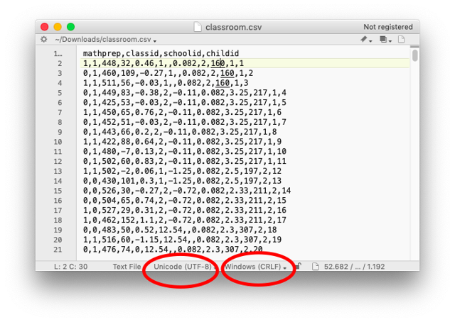

5.From file to data frame and back
- Know how to handle different encodings and dialects
- Make an informed choice for a file format
- Know how to access existing datasets
This chapter relies mostly on the pandas (Python) and tidyverse (R) functionality to read and write files. Additionally, haven is used to read data from other tools such as SPSS. Finally, we show how to use existing data from packages such as sotu (R) and nltk and scikit-learn (Python). If needed, you can install these packages with the code below (see Section 1.4 for more details):
!pip3 install pandas nltk scikit-learn
install.packages(c("sotu", "haven", "tidyverse","glue", "jsonlite"))
import jsonimport urllibimport pandas as pdimport nltkfrom nltk.corpus import state_unionfrom sklearn.datasets import fetch_20newsgroups
library(tidyverse)library(haven)library(sotu)library(glue)library(jsonlite)
5.1.Why and When Do We Use Data Frames?
In Section 3.1, we introduced basic data types: strings (which contain text), integers (which contain whole numbers, or numbers without anything “behind the dot”), floats (floating point numbers; numbers with decimals), and bools (boolean values, True or False). We also learned that a series of multiple values (e.g., multiple integers, multiple strings) can be stored in what we call a vector (R) or a list (Python).
In most social-scientific applications, however, we do not deal with isolated series of values. We rather want to link multiple values to each other. One way to achieve this is by the use of dictionaries (see Section 3.1). Such data structures are really useful for nested data: For example, if we do not want to only store people's ages, but also their addresses, we could store a dict within a dict.
In fact, as we will see later in this chapter, much of the data used by computational social scientists comes in such a format. For instance, data about an online product can contain many reviews which in turn have various pieces of information on the review author.
But ultimately, for many social-scientific analyses, a tabular data format is preferred. We are used to thinking of observations (cases) as rows with columns containing information or measurements about these observations (e.g., age, gender, days per week of newspaper reading, ...). It also simplifies how we can run many statistical analyses later on.
We could simply construct a list of lists to achieve such a tabular data format. In fact, this list-of-lists technique is often used to store tabular data or matrices, and you will probably encounter it in some examples in this book or elsewhere. The list-of-lists approach is very low-level, though: if we wanted, for instance, to insert a column or a row at a specific place, writing the code to do so could be cumbersome. There are also no things like column headers, and no consistency checks: nothing would warn us if one row actually contained more “columns” than another, which should not be the case in a rectangular table.
To make our lives easier, we can therefore use a data structure called a data frame. Data frames can be generated from list-of-list structures, from dictionaries, and many others. One way of doing this is shown in Example 5.1, but very often, you'd rather read data from a file or an online resource directly into a data frame (see Section 5.2).
Example 5.1.
Creating a data frame from other data structures
# Create two lists that will be columnslist1 = ["Anna", "Peter", "Sarah", "Kees"]list2 = [40, 33, 40, 77]# or we could have a list of lists insteadmytable = [["Anna", 40],["Peter", 33],["Sarah", 40],["Kees", 77]]# Convert an array to a dataframedf=pd.DataFrame(mytable)# Or create the data frame directly from vectorsdf2=pd.DataFrame.from_records(zip(list1,list2))# No. of rows, no. of columns, and shapeprint(f"{len(df)} rows x {len(df.columns)} cols")print(f"Its shape is {df.shape}")print("Element-wise equality of df and df2:")print(df == df2)
# Create two vectors that will be columnsvector1 <- c("Anna","Peter","Sarah","Kees")vector2 <- c(40,33,40,77)# Create an array of four rows and two columnsmyarray <- array(c(vector1,vector2), dim=c(4,2))# Convert an array to a dataframedf1=data.frame(myarray)# Or create the data frame directly from vectorsdf2=data.frame(vector1, vector2)# No. of rows, no. of columns, and dimensionprint(glue("{ncol(df1)} rows x {nrow(df1)} cols"))print(dim(df1))print("Element-wise equality of df1 and df2:")print(df1 == df2)
4 rows x 2 cols
Its shape is (4, 2)
Element-wise equality of df and df2:
0 1
0 True True
1 True True
2 True True
3 True True
2 rows x 4 cols
[1] 4 2
[1] "Element-wise equality of df1 and df2:"
X1 X2
[1,] TRUE TRUE
[2,] TRUE TRUE
[3,] TRUE TRUE
[4,] TRUE TRUE
In this book, we use data frames a lot, because they are very convenient for handling tabular data, and because they provide a lot of useful functionalities, instead of requiring us to re-invent the wheel all the time. In the next section, we will discuss some of them.
Of course, there are some situations when data frames are not a good choice to organize your data:
- Your data is one-dimensional. Think, for example, of resources like a list of stopwords, or a list of texts without any meta-information.
- Your data do not have a tabular structure. Think, for example, of deeply nested data, network data or of very messy data.
- Your data are so large that you cannot (or do not want to) load it into memory. For instance, if you want to process the text of all articles on Wikipedia, you probably want to process them one-by-one instead of loading all articles at the same time.
Therefore, you will come across (and we will introduce you to) examples in which we do not use data frames to organize our data. But in most cases we will, because they make our life easier: once we have constructed our data frame, we have a range of handy functions at our disposal that allow us to select rows or columns, add new rows or columns, apply functions to them, and so on. We will discuss these in Chapter 6.
But how do we – toy examples like those in Example 5.1 aside – get data into and out of data frames?
5.2.Reading and Saving Data
5.2.1.The Role of Files
In statistical software like SPSS or Stata, or in all typical office applications for that matter, you open a file, do some work on it, and then save the changes to the same file once you are done. You basically “work on that file”.
That's not how your typical workflow in R or Python looks. Here, you work on one or multiple data frames (or some other data structures). That means that you might start by reading the contents of some file into a data frame, but once that is done, there is no link between the data frame and that file any more. Once your work is done, you can save your data frame to a file, of course, but it is a good practice not to overwrite your input file, so that you can always go back to where you started. A typical workflow would look like this:
- Read raw data from file
myrawdata.csvinto data framedf - Do some operations and analyses on
df - Save
dfto filemyfinaldata.csv
Note that the last step is not even necessary, but may be handy if running the script takes very long, or if you want to re-distribute the resulting file.
The format in which we read files into a data frame and the format to which we save our final data frame by no means needs to be identical. We can, for example, read data created by someone else in Stata's proprietary
.dta format into a data frame and later save it to a .csv table.
While we sometimes do not have the choice in which format we get our input data, we have a range of options regarding our output data. We usually prefer formats that are open and interoperable for this, which ensures that they can be used by as many people as possible, and that they are not tied to any specific (proprietary) software tool which might not be available to everyone and can be discontinued in the future.
The most common file formats that are relevant to us are listed in Table 5.1. txt files are particularly useful for long texts (think of one file containing one newspaper article or even a whole book), but they are bad for storing associated meta data. csv files are the default choice for tabular data, and json files allow us to store nested data in a dictionary-like format.
For the sake of completeness, we also listed the native Python and R formats pickle, RDS, and RDA. Because of their lack of interoperability, they are not very suitable for long-term storage or for sharing data, but they can have a place in a workflow as an intermediate step to solve the issue that none of the other formats are able to store all properties of a data frame (e.g., the csv file cannot store whether a given column in an R data frame is to be understood as containing strings such as “man”, “woman”, “non-binary” or a factor with the three levels man, woman, non-binary). If it is important to store an object (such as a data frame) exactly as-it-is, we can use these formats. One of the rare instances where we use these formats is in Example 11.8, where we store machine learning models for later reuse.
Table 5.1.
Basics of data frame handling
| Used for? | open | interoperable? | |||||||
|---|---|---|---|---|---|---|---|---|---|
| txt | plain text | yes | yes | ||||||
| csv | tabular data | yes | yes | ||||||
| json | nested data, key-value pairs | yes | yes | ||||||
| pickle | Python objects | yes | no | ||||||
| RDS/RDA | R objects | yes | no | ||||||
5.2.2.Encodings and Dialects
Plain txt files, csv files, and json files are all files that are based on text. Unlike binary file formats, you can read them in any text editor. Try it yourself to understand what is going on under the hood.
Download a csv file (such as cssbook.net/d/gun-polls.csv) and open it in a text editor of your choice. Some people swear that their preferred editor is the best (google to learn about the vi versus emacs war for some entertainment), but if you have no strong feeling, then Notepad++, Atom, or Sublime may be good choices that you may want to look into.
As you will see (Figure 5.1), a csv file internally just looks like a bunch of text in which each line represents a row and in which the columns are separated by a comma (hence the name comma separated values (csv)). Looking at the data in a text editor is a very good way to find out what happens if reading your files into a data frame does not work as expected – which can happen more frequently than you would expect.
Mostly due to historical reasons, not every text based file (which, as we have seen, includes csv files) is internally stored in the same way. For a long time, it was common to encode in such a way that one character mapped to one byte. That was easy from a programming perspective (after all, the \(n\)th character of a text can be directly read from and written to the \(n\)th byte of a file) and was also storage-efficient. But given that a byte consists of 8 bits, that means that there are only 256 possible characters. All letters in the alphabet in uppercase, again in lowercase, numbers, punctuation, some control characters – and you are out of characters. Due to this limitation, there were different encodings or codepages for different languages that told a program which value should be interpreted as which character.
We all know the phenomenon of garbled special characters, like German umlauts or Scandinavian characters like ø, å, or œ being displayed as something completely different. This happens when files are read with a different encoding than the encoding that was used for creating them.
In principle, this issue has been solved due to the advent of Unicode. Unicode allows all characters from all scripts to be handled, including emoticons, Korean and Chinese characters, and so on. The most popular encoding for Unicode characters is called UTF-8, and it has been around for decades.
To avoid any data loss, it is advisable to make sure that your whole workflow uses UTF-8 files. Most modern applications support UTF-8, even though some still by default use a different encoding (e.g., “Windows-1252”) to store data. As Figure 5.1 illustrates, you can use a text editor to find out what encoding your data has, and many editors also offer an option to change the encoding. However, you cannot recover what has been lost (e.g., if at one point you saved your data with an encoding that only allows 256 different characters, it follows logically that you cannot recover that information).
Figure 5.1.
A csv file opened in a text editor, illustrating that the columns are separated by commas, and showing the encoding and the line endings.

{kind=link}
As we will show in the practical code examples below, you can also force Python and R to use a specific encoding, which can come in handy if your data arrives in a legacy encoding.
Related to the different encodings a file can have, but less problematic, are different conventions of how a line ending is denoted.
Windows-based programs have been using a Carriage Return followed by a Line Feed (denoted as \r\n),
very old versions of MacOS used a Carriage Return only (\r), and newer versions of MacOS as well as Linux use a Line Feed only (n).
In our field, the Linux (or Unix) style line endings have become most dominant,
and Python 3 even automatically converts Windows style line endings to Unix style line endings when reading a file – even on Windows itself.
A third difference is the use of so-called byte-order markers (BOM). In essence, a BOM is an additional byte added to the beginning of a text file to indicate that it is a UTF-encoded file and to indicate in which order the bytes are to be read (the so-called endianness). While informative, this can cause trouble if your program does not expect that byte to be there. In that case, you might either want to remove it or explicitly specify the encoding as such. For instance, you can add an argument such as encoding="UTF-8" or encoding="UTF-8bom" to the open (Python) or scan (R) command.
In short, the most standard form in which you probably want to encode your data is in UTF-8 with Linux-style line endings without the use of a byte-order marker.
In the case of reading and writing csv files, we thus need to know the encoding, and potentially also the line ending conventions and the presence of a byte-order marker. However, there are also some additional variations that we need to consider. There is no single definition of what a csv file needs to look like, and there are multiple dialects that are widely used. They mainly differ in two aspects: the delimiter that is chosen, and the quoting and/or escaping of values.
First, even though csv stands for comma separated values, one could use other characters instead of a comma to separate the columns. In fact, because many countries use a comma instead of a dot as a decimal separator ($10.30 versus 10,30€), in these countries a semicolon (;) is used instead of a comma as the column delimiter.
To avoid any possible confusion, others use a tab character (t) to separate columns.
Sometimes, these files are then called a tab-separated file, and instead of .csv,
they may have a file extension such as .tsv, .tab, or even .txt.
However, this does not change the way how you can read them – but what you need to know is whether your columns are separated by
,, ;, or t.
Second, there may be different ways to deal with strings as values in a csv file. For instance, it may be that a specific value contains the same character that is also used as a delimiter. These cases are usually resolved by either putting all strings into quotes, putting only strings that contain such ambiguities in quotes, or by prepending the ambiguous character with a specific escape character. Most likely, all of this is just handled automatically under the hood, but in case of problems, you might want to look into this and check out the documentation of the packages you are using on how to specify which strategy is to be used.
Let's get practical and try out reading and writing files into a data frame (Example 5.2).
Example 5.2.
Reading files into a data frame
url = "https://cssbook.net/d/media.csv"# Directly read a csv file from internetdf = pd.read_csv(url)# We can also explicitly specify delimiter etc.df = pd.read_csv(url, delimiter = ",")# Note: use help(pd.read_csv) to see all options# Save dataframe to a csv:df.to_csv("mynewcsvfile.csv")
url = "https://cssbook.net/d/media.csv"# Directly read a csv file from internetdf = read_csv(url)# We can also explicitly specify delimiter etc.df = read_delim(url, delim = ",")# Note: use ?read_csv to see all options# Save dataframe to a csv:write_csv(df,"mynewcsvfile.csv")
Of course, we can read more than just csv files. In the Python
example, you can use tabcompletion to get an overview of all file
formats Python supports: type pd.read and then press the TAB key to
get a list of all supported files. For instance, you could
pd.read_excel('test.xlsx'), df3 = pd.read_stata('test.dta'), or
df4 = pd.read_json('test.json') Similarly, for R, you can hit TAB
after typing haven:: to get an overview over functions such as
read_spss.
5.2.3.File handling beyond data frames
Data frames are a very useful data structure for organizing and analyzing data, and will occur in many examples in this book.
However, not all things that we might want to read from a file needs to go into a data frame.
Imagine if we have a list of words that we later want to remove from some texts (so-called stopwords, see Chapter 9).
We could make a list (or vector) of such words directly in our code.
But if we have more than a couple of such words, it is easier and more readable to keep them in an external file. We could create a file stopwords.txt in a text editor with one of such words per line:
and or a an
If you do not wish to create this list yourself, you could also download one from cssbook.net/d/stopwords.txt and save it in the same directory as your Python or R script.
Then, you can read this file into a vector or list (see Example 5.3).
Example 5.3.
Reading files without data frames
# Define stopword list in the code itselfstopwords = ["and","or","a","an","the"]# Better idea: Download stopwords file and read iturl = "https://cssbook.net/d/stopwords.txt"urllib.request.urlretrieve(url, "stopwords.txt")with open("stopwords.txt") as f:stopwords = [w.strip() for w in f]stopwords
# Define stopword list in the code itselfstopwords = c("and", "or", "a", "an", "the")# Better idea: Download stopwords file and read iturl = "https://cssbook.net/d/stopwords.txt"download.file(url, "stopwords.txt")stopwords = scan("stopwords.txt", what="string")stopwords
Example 5.4.
More examples for reading from and writing to files. Because dictionaries do not exist in R and handling non-rectangular data is more uncommon in R, we do not show an example for direct interaction with JSON files without involvement of a data frame in the R example.
# Modify the stopword list and save it:stopwords += ["somenewstopword", "andanotherone"]with open("newstopwords.txt",mode = "w") as f:f.writelines(stopwords)# Use json to read/write dictionariessomedict = {"label":"Report","entries":[1,2,3,4]}with open("test.json",mode = "w") as f:json.dump(somedict, f)with open("test.json",mode = "r") as f:d = json.load(f)print(d)
# Modify the stopword list and save it:stopwords = c(stopwords,"somenewstopword", "andanotherone")fileConn<-file("newstopwords.txt")writeLines(stopwords, fileConn)close(fileConn)# Use json to read/write named listssomedict = list(label="Report",entries=c(1,2,3,4))write_json(somedict, "/tmp/x.json", auto_unbox=T)d=read_json("/tmp/x.json", simplifyVector = T)print(d)
Example 5.4 provides you with some more elaborate code examples that allows us to dig a bit deeper into the general way of handling files.
In the Python example, we can open a file and assign a handle to it that allows us to refer to it (the name of the handle is arbitrary, let's just call it f here).
Then, we can use a for loop to iterate over all lines in the file and add it to a list.
The mode = 'r' specifies that we want to read from the file. mode = 'w' would open the file for writing, create it if necessary, and immediately deletes all content that may have been in there if the file already existed (!).
Note that the .strip() is necessary to remove the line ending itself, and also any possible whitespace at the beginning or end of a line.
If we want to save our stopwords, we can do this in a similar way: we first open the file (this time, for writing), and then use the file handle's methods to write to it.
We are not limited to plain text files, here. For instance, we can use the same approach to read json files into a Python dict or to store a Python dict into a json file.
We could also combine this with a for loop that goes over all files in a dictionary.
Imagine we have a folder full of positive movie reviews, and another one full of negative movie reviews that we want to use to train a machine learning classifier (see Section 11.4).
Let's further assume that all these reviews are saved as .txt files.
We can iterate over all of them, as shown in Example 11.1. If you want to read text files into a data frame in R, the readtext package may be interesting for you.
5.3.Data from online sources
Many data that are interesting to those analyzing communication are nowadays gathered online. In Chapter 12, you will learn how to use APIs to retrieve data from web services, and how to write your own web scraper to automatically download large numbers of web pages and extract relevant information. For instance, you might want to retrieve customer reviews from a website or articles from news sites.
In this section, however, we will focus on how to re-use existing datasets that others have made available online. For instance, the open science movement has led to more and more datasets being shared openly using repositories such as Dataverse, Figshare, or others. Re-using existing data can be very good for several reasons: first, to confirm (or not) the conclusions drawn by others; second, to avoid wasting resources by re-collecting very similar or even identical data all over again; and third, because gathering a large, high-quality dataset might just not be feasible with your means. This is especially true when you need annotated (i.e., hand-coded) data for supervised machine learning purposes (Chapter 8).
We can distinguish between two types of existing online datasets: datasets that are inherently interesting, and so-called toy datasets.
Toy datasets may include made-up data, but often, they contain real data. However, they are not analyzed to gain scientific insights (any more), as they may be too small, outdated, or already analyzed all-over again. These provide a great way, though, to learn and explore new techniques: after all, the results and the characteristics of the data are already known. Hence, such toy datasets are often even included in R and Python packages. Some of them are really well-known in teaching (e.g., the iris dataset containing measurements of some flowers; or the titanic dataset containing statistics on survival rates of passengers on the Titanic; MINIST for image classification; or the MPG dataset on car fuel consumption). Many of these are included in packages like scikit-learn, seaborn, or ggplot2– and you can have a look at their documentation.
For instance, the 20 Newsgroups dataset contains \(18846\) posts from newsgroups plus the groups where they were posted (Example 5.5). This can be an interesting resource for practicing with natural language processing, unsupervised, and supervised machine learning. Other interesting resource are collections of political speeches, such as the state-of-the-union speeches from the US, which are available in multiple packages (Example 5.6). Other interesting datasets with large collections of textual data may be the Financial News dataset compiled by Chen (2017) or the political news dataset compiled by Horne et al. (2018).
Example 5.5.
In Python, scikit-learn has a convenience function to automatically download the 20 newsgroup dataset and automatically clean it up. In R, you can download the raw version (there are multiple copies floating around on the internet) and perform the cleaning yourself.
# Note: use fetch_20newsgroups? for more optionsd=fetch_20newsgroups(remove=("headers", "footers", "quotes"))df=pd.DataFrame(zip(d["data"],d["target_names"]))df.head()
url = "https://cssbook.net/d/20_newsgroups.csv"d = read_csv(url)head(d)
0 1 0 I was wondering if anyone out there could enli... alt.atheism 1 A fair number of brave souls who upgraded thei... comp.graphics 2 well folks, my mac plus finally gave up the gh... comp.os.ms-windows.misc 3 \nDo you have Weitek's address/phone number? ... comp.sys.ibm.pc.hardware 4 From article <C5owCB.n3p@world.std.com>, by to... comp.sys.mac.hardware
Example 5.6.
A collection of US state-of-the-union speeches is available in multiple packages in various forms.
# Note: download is only needed once...nltk.download("state_union")sentences = state_union.sents()print(f"There are {len(sentences)} sentences.")
speeches = sotu_meta# show only first 50 charactersspeeches %>%mutate(text = substr(sotu_text,0,50)) %>%head()
| president | year | years_active | party | sotu_type | text |
|---|---|---|---|---|---|
| <chr> | <int> | <chr> | <chr> | <chr> | <chr> |
| George Washington | 1790 | 1789-1793 | Nonpartisan | speech | Fellow-Citizens of the Senate and House of Represe |
| George Washington | 1790 | 1789-1793 | Nonpartisan | speech | Fellow-Citizens of the Senate and House of Repr |
| George Washington | 1791 | 1789-1793 | Nonpartisan | speech | Fellow-Citizens of the Senate and House of Repr |
| George Washington | 1792 | 1789-1793 | Nonpartisan | speech | Fellow-Citizens of the Senate and House of Represe |
| George Washington | 1793 | 1793-1797 | Nonpartisan | speech | Fellow-Citizens of the Senate and House of Repr |
| George Washington | 1794 | 1793-1797 | Nonpartisan | speech | Fellow-Citizens of the Senate and House of Repr |
There are also some more generic resources that you may want to consider for finding more datasets to play around with. On datasetsearch.research.google.com, you can search for datasets of all kinds, both really interesting ones and toy datasets. Another great research is kaggle.com, a site that hosts data science competitions.